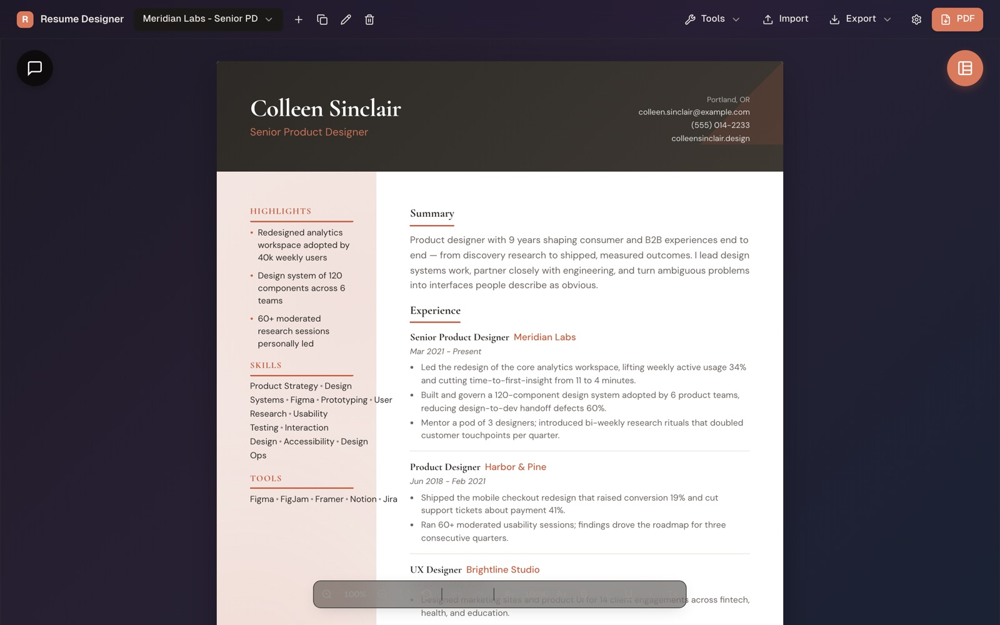

Keep your full history in one place, then spin off polished, job-tailored variants — privately, on your own machine. No account, no backend, no telemetry.

Write your history once. Tailor it forever. Every piece built for speed, privacy, and a finished look you'd actually send.
Keep your complete work history, skills, education, and projects in a single source of truth — then spin off a fresh, job-specific variant for every role you chase. Edit the master, and every variant stays in step.
Paste a job posting and the optional assistant drafts, rewrites, and tailors with your own OpenRouter key — many models, one key, every change yours to approve.
Sidebar, Executive, Timeline, Creative, and more — swap the whole look without retyping a word.
Pull a profile straight from a PDF or DOCX, then export clean, multi-page PDFs to send.
Your profile, resumes, and settings live as plain files on your device. Nothing leaves unless you ask it to.
A native macOS and Windows app with a translucent liquid-glass UI — or run it right in your browser.
Paste a job posting and the assistant rewrites your resume against your master profile — applied as inline diffs you review, never a silent overwrite.
Optional — only needed for the AI features.
From blank profile to polished PDF.
Resume Designer is licensed under the GNU Affero General Public License v3.0. Read the code, fork it, send a pull request — it's all out in the open.
Ideas, bug reports, layout requests, or just saying hi — bring them to GitHub Discussions and chat with the project.